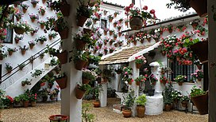

Los Patios
El Festival de los Patios Cordobeses es un concurso de patios de Córdoba (España) celebrado desde 1921...
Los patios durante el Festival se establecen en tres categorías: «Arquitectura Antigua», «Arquitectura Moderna» y «Patios Singulares»...